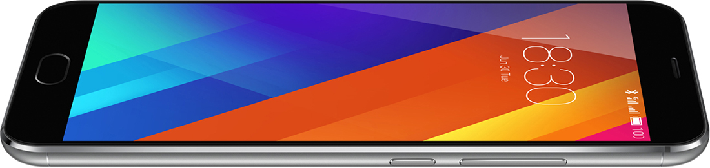
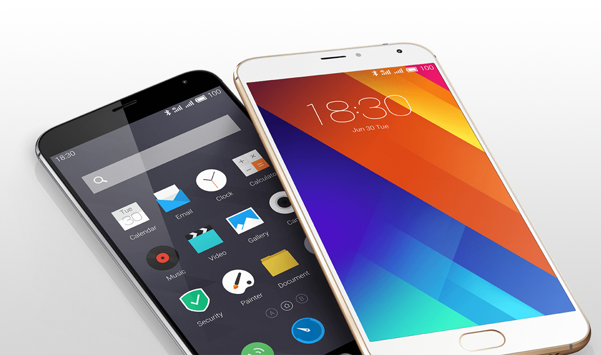
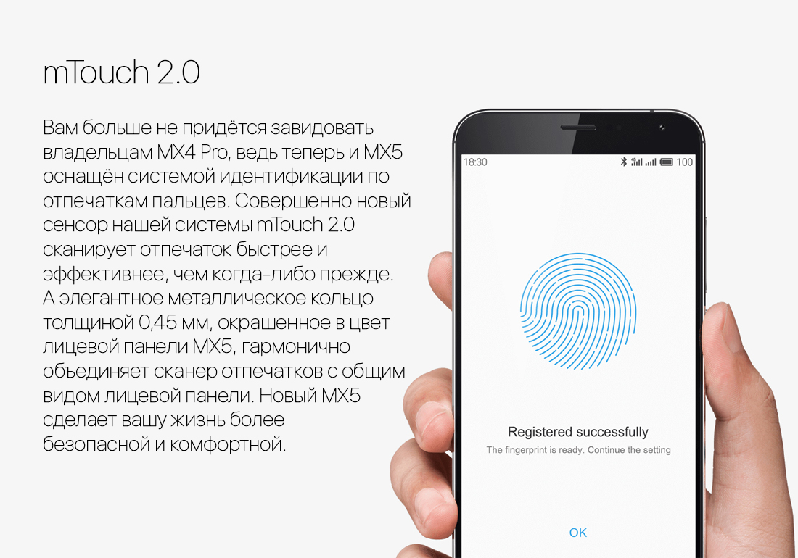

8-499-674-70-08

|
|
|
|
|
|
8-495-287-60-29 8-499-674-70-08 |
| Pro 6 | M2 mini | MX5 | |||
|
|||||
| ЕЩЕ ЛУЧШЕ! | |||||
| Высочайшее качество производства, мощная конфигурация и привлекательная цена. Без сомнения, Meizu MX5 заслуживает вашего внимания. Для изготовления смартфона требуется не так уж и много усилий, но вот успешная интеграция в устройстве множества инноваций возможна лишь при наличии многолетнего опыта. | |||||
|  | |||||
| Улучшенная 64-битная Flyme OS 4.5 на базе Android 5 | |||||
| MEIZU обновляет свою ОС Flyme 4 до 64-битной Flyme 4.5, включая более чем 100 функциональных обновлений для Android. Мы не могли довольствоваться текущей эффективностью и быстротой Flyme 4, поэтому пошли дальше и оптимизировали более 2000 пунктов системы, повысив плавность её работы на 20% и объединив со сбалансированным и энергоэффективным 64-битным процессором Helio X10. | |||||
| 64-битная ОС | Более 100 обновлений | На 20% плавнее | |||||
|  | |||||
| Реальная производительность - важнее тестов | |||||
| Новый Mediatek Helio X10 Turbo является 64-битным 8-ядерным процессором, изготовленным по 28нм-процессу HPM (High Performance Mobile - высокая мобильная производительность). Он работает со стабильной частотой и эффективно минимизирует утечку энергии. Безусловно, графический процессор PowerVR G6200 также имеет высочайшую производительность и помогает поддерживать стабильную частоту кадров даже после продолжительной игры. Но, что более важно, Helio X10 обладает тонко сбалансированным энергопотреблением, что даёт плавность при работе с устройством одновременно с энергоэффективностью. В сочетании с передовой 64-разрядной Flyme OS 4.5, новый MX5 предлагает наилучшую реальную производительность и невероятный опыт эксплуатации, среди смартфонов, когда-либо созданных MEIZU ранее. | |||||
|  | |||||
| | Сотрудничество | Оплата | Гарантия | Контакты | | |||||
| COPYRIGHT © 2016 MEIZU Technology Co., Ltd. Все права защищены. |
|
||||